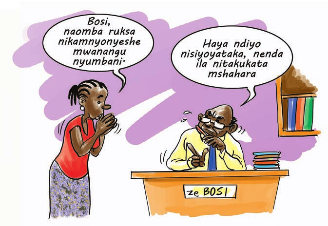

Katika Sura ya tatu, imeelezwa kuwa watu wenye kipato cha chini hutumia muda mwingi
mahali pa kazi huku kipato kikiwa hakitoshi kumudu maisha. Katika nchi yoyote
ile uhalali au kukubalika kwa uchumi kunategemea haki za msingi za ajira, sawa
na uwezo wa kufanya kazi unaohitajika ili uchumi kukua.
Pia kuimarika kwa haki za kazi na za kijamii kunategema soko la kiuchumi lenye
ufanisi na linalofanya kazi vizuri. Hii inaendana na kubadili mtindo wa siku
zote wa uzalishaji duni, mapato ya chini na kuhatarisha maisha kazini na nafasi
yake kuchukuliwa na utekelezaji wa kanuni za kimsingi za haki mahali pa kazi
pamoja na ajenda ya mazingira bora ya kazi, pamoja na mkakati wa kuhakikisha
usalama na fursa kwa wafanyakazi.
Dira iliyowekwa na shirika la kazi duniani inasema “Iwapo mazingira ya kazi yaliyopo
yanajumuisha udhalimu, ugumu wa maisha na ufukara kwa idadi kubwa ya watu na
hivyo kusababisha vurugu kubwa sana kiasi kwamba yanahatarisha amani na utulivu
duniani; uboreshaji wa mazingira hayo unahitajika kwa haraka sana”.
Shirika la kazi duniani limeingiza dira hii katika ajenda ya kazi zenye staha ambayo
inajumuisha matamanio ya watu ya kuwa na ajira ya kudumu yenye kuzalisha kipato
ambayo inatoa kipato kwa haki, usalama mahali pa kazi na ulinzi wa kijamii, uhuru
wa watu kueleza matatizo yao, kuandaa na kushiriki katika maamuzi ambayo yanaathiri
maisha yao na kupata fursa usawa na kuwatendea haki wanawake na wanaume wote.
Kupitia MKUKUTA, Serikali ya Tanzania imechukua suala la ajira kama jukumu la kijamii
katika maendeleo na ustawi wa nchi. MKUKUTA unabainisha suala la ajira kama la
kimkakati na unajaribu kujenga fursa za kazi zenye staha.
-
Haki ya Kuajiriwa na Kufanya Kazi
Katiba ya Jamhuri ya Muungano wa Tanzania ya 1977 inalinda haki chache za kiuchumi,
kijamii na kiutamaduni. Haki za kiuchumi katika Katiba ni pamoja na haki
ya kufanya kazi na usawa katika sehemu za kazi iliyoainishwa katika Ibara
ya 22 ya Katiba. Hali kadhalika, haki ya kupata ujira na malipo ya haki kulingana
na kazi ambayo mtu ameifanya imeainishwa katika Ibara ya 23. Ibara ya 25
inatoa wajibu kwa kila mtu kufanya kazi kwa kujituma na kwa uaminifu.
-
Haki ya Kupewa Mikataba ya Ajira
Mkataba wa Ajira
Jinsi ya Kuendesha
- Mwezeshaji kwa njia ya maswali ya papo kwa papo, waulize washiriki yafuatayo
- Mkataba wa ajira ni nini?
- Kwa nini ni muhimu kuwa na makataba wa ajira baina ya mwajiri na mwajiriwa?
- Taratibu za kuvunja mkataba wa ajira ni zipi?
Mchango wa Mwezeshaji
Mwezeshaji fafanua Msingi wa uhusiano wa kiajira baina ya mfanyakazi na mwajiri wake
ni mkataba wa ajira. Mkataba wa ajira unaweza kuwa wa mdomo au wa maandishi.
Ili kuhakikisha mambo ya msingi yanawekwa wazi Sheria inamtaka mwajiri kumpa
mfanyakazi maelezo ya ajira yake kwa maandishi baada ya siku sita kuanzia siku
ambayo mfanyakazi aliajiriwa, isipokuwa pale ambapo mfanyakazi amepewa mkataba
wa maandishi ukiainisha waziwazi mambo hayo. Maelezo hayo ni haya yafuatayo
- Jina, umri, anuani na jinsi ya mfanyakazi.
- Mahali pa kuajiriwa,
- Kazi na maelezo ya kazi yenyewe,
- Tarehe ya kuanza kazi,
- Aina na muda wa mkataba
- Mahali pa kazi
- Saa za Kazi
- Ujira, mahesabu ya ujira huo na maelezo kuhusu malipo mengine,
- Maelezo kuhusu likizo,
- Jambo lingine lolote ambalo kisheria lazima litolewe maelezo.
Angalizo: Mabadiliko yoyote ya maelezo ya ajira ni lazima yafanyike
baada ya mwajiri kushauriana na mfanyakazi na kumpa taarifa ya mabadiliko hayo
kwa maandishi
Aina za Mikataba ya Ajira
Sheria ya Ajira na Uhusiano Kazini imeigawa mikataba ya ajira katika aina kuu
tatu ambazo ni;
- Mikataba isiyokuwa na muda maalum
- Mkataba wa muda maalum
- Mkataba wa kazi maalum
Mikataba Isiyokuwa na Muda Maalum
Mkataba usiokuwa na muda maalum ni mkataba ambao ukomo wa ajira haujatajwa waziwazi.
Chini ya mkataba huu mfanyakazi anaweza kuendelea na kazi mpaka kufikia umri
wa kustaafu endapo haitatokea sababu yoyote ya kusitisha ajira kabla ya umri
huo wa kustaafu.
Mkataba wa Muda Maalum
Mkataba wa Muda Maalum ni mkataba ambao kipindi cha ajira kimewekwa wazi na tarehe
ya ukomo wa ajira ipo wazi na inajulikana. Hata hivyo Sheria imeeleza wazi
kuwa aina hii ya mkataba itahusu waledi na wafanyakazi wa kada ya uongozi.
Mkataba wa Kazi Maalum
Mkataba wa Kazi Maalum ni aina nyingine ya mkataba wa muda maalum ambao hutegemea
kumalizika kwa kazi na malipo hufanyika kwa siku au baada ya kumalizika kwa
kazi husika.
Angalizo: Uhalali wa mkataba ni lazima ujengwe katika nguzo kuu tano
ambazo ni makubaliano, hiari ya kuingia mkataba, malipo halali, uwezo wa kuingia
mkataba pamoja na uhalali wa shughuli yenyewe itakayofanyika
Taratibu za Kuvunja Mkataba wa Ajira
Mkataba wa ajira, kama ilivyo mikataba mingine inayotambulika kisheria, inaweza
kusitishwa kwa namna mbalimbali. Njia ambazo mwajiri anaweza kuzitumia kusitisha
mkataba na mwajiriwa ni pamoja na:-
- Kumwachisha kazi mwajiriwa kwa kumpa taarifa (notisi).
- Mwajiriwa kuamua kuacha kazi kwa kutoa taarifa.
- Kustaafu.
- Kifo/Ugonjwa.
- Kampuni/ mwajiri kufilisika.
- Kuachishwa kazi kutokana na utovu wa nidhamu kazini.
- Kupunguzwa kazini.
-
Haki ya Muda Stahili wa kufanya kazi
Katika kulinda ustawi wa wafanyakazi kimwili, kijamii na kisaikolojia, imewekwa
dhana ya kazi zenye staha inayohusu kiwango cha mwisho cha mgawanyo wa saa
za kazi. Kiashiria cha kazi zenye staha kimefafanuliwa kwa kutumia uwiano
saa 48 katika wiki kama kiwango juu zaidi cha kufanya kazi kilichopendekezwa
katika Mikataba ya Shirika la Kazi Duniani.
Tanzania kupitia sheria ya Ajira na Mahusiano ya Kazi ya Mwaka 2004 imeweka
kiwango cha juu cha kufanya kazi kama ifuatavyo;
- Siku 6 kwa wiki.
- Saa 45 kwa wiki.
- Saa 9 kwa siku.
Sheria haimruhusu mwajiriwa kufanyakazi muda wa ziada labda tu kama imeelezwa
bayana kwenye mkataba wa ajira. Hata hivyo, saa hizo zisizidi masaa hamsini
(50) katika mzunguko wa wiki nne. Mwajiri atapaswa kumlipa mfanyakazi saa
za ziada (overtime) alizofanya kazi kwa malipo ambayo si chini ya moja
na nusu (1½) ya mshahara mmoja wa mwajiriwa kwa kila saa ya ziada.
Ni muhimu kwa Wasaidizi wa Kisheria kufahamu vikwazo katika kufikia masaa ya
kazi yenye staha kama ilivyoainishwa kwenye sheria. Utafiti wa Taasisi ya
Taifa ya Takwimu (2006) unaonyesha kuwa wastani wa masaa ya kazi kwa wiki
ni asilimia 59.9 kwa wanaume na 48.9 kwa wanawake huku wafanyakazi katika
maeneo ya mijini wakiwa na wastani wa masaa 62.2 kwa wiki.
Wastani unaonekana upo chini kwa wanawake ukilinganishwa na wanaume lakini
jambo la muhimu kuelewa kwa Wasaidizi wa Kisheria na jamii kwa ujumla ni
kuwa pia wanawake wanabeba kazi nyingine nyingi za kifamilia kabla na baada
ya masaa ya kazi walipoajiriwa. Mshikamano wa kazi za ulezi na kazi za kulipwa
kwa wanawake ni tatizo kwa sababu majukumu haya hayahesabiwi kama shughuli
za kiuchumi na hivyo hayajumuishwi katika upimaji wa masaa ya kazi. Hivyo
wastani wao wa masaa ya kazi kwa wiki pengine upo juu sana. Kwa mtizamo huu
basi ni rahisi sana kwa wanawake kujikuta katika masaa mengi ya kazi yasiyo
na staha na hivyo kuathiri ustawi wao kimwili, kisaikolojia na kijamii.
Pia matumizi ya masaa ya kazi ni vigumu kupima kwa maeneo ya vijijini kwa sababu
kazi kubwa ni kilimo ambayo kwa kiasi kikubwa haijarasimishwa na inategemea
sana msimu.
Wasaidizi wa Kisheria wanapaswa kusisitiza wananchi kulipwa ujira kulingana
na uzalishaji na masaa ya kazi. Kama itatokeo basi wafanyakazi wanaenda masaa
ya ziada tofauti na ilivyoainishwa kwenye sheria basi wanastahili kulipwa
ujira.
Haki ya Likizo
Likizo ni sehemu muhimu katika kupima staha katika kazi kwa kuonyesha uwiano
ambao wafanyakazi wanaweka kati ya kazi zao na maisha binafsi. Sheria ya Ajira
na Mahusiano ya Kazi 2004, na Sheria ya Taasisi za Kazi 2004 zinazingatia mwingiliano
wa kazi, familia na maisha binafsi kwa kupitia likizo mbalimbali kama vile
likizo ya mwaka, likizo ya ugonjwa, likizo ya uzazi, na likizo ya ulezi.
-
Likizo ya mwaka
Mwajiri hana budi kumpa mfanyakazi likizo ya siku 28 kwa mwaka yenye malipo.
Katika kipindi hiki cha likizo, siku zote zitahesabiwa zikiwemo zile za
mapumziko ya wiki na sikukuu. Mfanyakazi anayestahili likizo ni yule aliyefanya
kazi kwa muda wa mwaka mmoja.
Kwa mwajiriwa wa msimu, ikiwa amefanya kazi kwa mwajiri huyo huyo kwa zaidi
ya mara moja kwa mwaka na ikiwa vipindi hivyo alivyofanya kazi vinazidi
miezi 6 na kuendelea katika mwaka huo, basi anastahili likizo yenye malipo.
-
Likizo ya ugonjwa
Mfanyakazi anastahili likizo ya ugonjwa ya siku 126. Likizo hii imegawanyika
katika mafungu mawili;
- Siku 63 za kwanza za likizo ya ugonjwa zitakuwa na malipo kamili ya mshahara.
- Siku 63 za pili za likizo ya ugonjwa zitakuwa na malipo ya nusu mshahara.
Hata hivyo, mwajiri hatapaswa kumlipa mfanyakazi likizo ya ugonjwa endapo
mfanyakazi huyo atashindwa kutoa cheti cha daktari kuthibitisha ugonjwa
wake.
-
Likizo ya uzazi
Mfanyakazi anastahili likizo ya uzazi kama ifuatavyo:-
- Siku 84 za likizo ya uzazi yenye malipo iwapo amejifungua mtoto mmoja.
- Siku 100 za likizo ya uzazi yenye malipo iwapo amejifungua watoto mapacha.
- Siku 84 za ziada za likizo ya uzazi yenye malipo ndani ya mzunguko wa likizo
yake, iwapo mtoto wake atafariki ndani ya mwaka mmoja wa kuzaliwa na
mwajiriwa huyo akapata ujauzito na kujifungua kabla ya miezi thelathini
na sita.
- Ikiwa mfanyakazi ni mwanaume na mke wake amejifungua mtoto basi mfanyakazi
huyo mwanaume anayo haki ya kupata likizo ya siku 3. Likizo hii inapaswa
ichukuliwe ndani ya siku 7 tangu mtoto kuzaliwa.
Hakuna mfanyakazi aliyejifungua atakaefanya kazi ndani ya wiki 6 tangu ajifungue
isipokuwa kwa ruhusa ya daktari.
Jambo la muhimu kuzingatia ni kuwa mafao ya uzazi pengine yanatekelezwa vizuri
na sekta rasmi. Hata hivyo ni muhimu kwa wasaidizi wa kisheria kutambua
kuwa ni wanawake wachache tu waliojariwa katika sekta rasmi huku wengi
wakiwa bado wapo katika sekta isiyo rasmi ambapo ulinzi wa Sheria ya Kazi
na Mahusiano Kazini hauwafikii.
-
Haki ya Kujiunga na Vyama vya Wafanyakazi
Jinsi ya Kuendesha
- Mwezeshaji wagawe washiriki katika makundi matatu na wajadili yafuatayo,
- Zipi ni faida za kujiunga na vyama vya wafanyakazi?
- Kwanini ni muhimu kwa wanawake kujiunga na vyama vya wafanyakazi?
- Zipi ni taratibu za kujiunga na vyama vya wafanyakazi katika sekta
unayofanyia kazi?
- Taja vyama vya wafanyakazi unavyovifahamu
- Yapi ni majukumu ya vyama vya wafanyakazi?
Baada ya kumaliza majadiliano washiriki wafanye uwasilishaji na mwezeshaji
afuatilie kwa makini uwasilishaji huo ili apate fursa ya kufafanua
baada ya zoezi la uwasilishaji kumalizika.
Au,
- Mwezeshaji wagawe washiriki katika makundi matatu na wafanye yafuatayo;
- Wajadiliane namna gani wasaidizi wa kisheria wanavyoweza kusaidia utetezi
wa haki za wafanyakazi majumbani, mashambani, migodini na mahotelini
- Kwa namna gani watashirikisha serikali za mtaa/kijiji katika mchakato
huo?
Au,
- Mwezeshaji aandae safari ya washiriki kutembelea chama cha wafanyakazi
kujifunza jinsi wanavyoendesha shughuli zao.
Mchango wa Mwezeshaji
Mwezeshaji fafanua kuwa vyama vya Wafanyakazi ni taasisi zinazoanzishwa kisheria
na wafanyakazi ili kuwaunganisha waweze kutetea haki zao na maslahi yao kazini
kwa sauti moja. Pamoja na mafao bora kulingana na uzalishaji wao kazini,
maslahi ya wafanyakazi yanajumuisha pia mazingira bora na yenye staha ya
kufanyia kazi.
Sheria ya Ajira na Mahusiano ya Kazi ya mwaka 2004, na Sheria ya Taasisi za
Kazi 2004 zinatoa haki kwa wafanyakazi wote kuanzisha na kujiunga na vyama
vya wafanyakazi na kwa waajiri kuunda vyama vya waajiri. Kushiriki katika
shughuli halali za vyama vyao, sheria inatoa haki ya vyama kuwa na kuandaa
katiba na kanuni, kuwa na uongozi, kushiriki katika shughuli tofauti na kubuni
programu, kuingia na kufanya shughuli zao mahali pa kazi, kukata michango
ya vyama vya wafanyakazi. Pia inatoa sharti kwa vyama vya wafanyakazi,vyama
vya waajiri na mashirikisho ya vyama hivyo kuwa visajiliwe ndani ya miezi
sita.
Majukumu ya vyama vya wafanyakazi ni;
- Kutetea haki na maslahi ya wafanyakazi wote bila kuwabagua kwa misingi ya
kijinsia, rangi, imani, itikadi, hadhi n.k
- Kuelimisha wafanyakazi kuhusu haki zao
- Kuwakilisha wanachama katika ngazi zote za kitaifa na za kimataifa
- Kushughulikia utatuzi wa migogoro ya kikazi
- Kutetea upatikanaji wa hali bora za kazi.
Faida za Kujiunga na Vyama vya Wafanyakazi
- Uwakilishi pindi unapotokea mgogoro wa kimaslahi kazini baina ya mwajiri
na mwajiriwa
- Kutetea haki za mfanyakazi zisipindishwe na mwajiri mfano haki ya likizo,mafao
bora n.k
- Kwa niaba ya wafanyakazi, kuhamasisha waajiri kuweka mazingira bora, salama
na yenye staha kazini
- Kuwaelimisha wanachama wao juu ya haki zao za kazi, na namna bora ya kuzidai
haki hizo
Historia ya Shirikisho la Vyama vya Wafanyakazi ( TFL, NUTA, JUWATA na OTTU)
- TFL (Tanzania Federation of Labour) - ilianzishwa mwaka 1964 kama shirikisho
la vyama vingine vidogo vidogo
- NUTA (National Union of Tanganyika Workers) – ilianzishwa sambamba na TANU.
Mwaka 1979 ilibdilishwa kuwa JUWATA (Jumuiya ya Wafanyakazi Tanzania) baada
ya kuundwa kwa CCM
- JUWATA ilibadilishwa kuwa OTTU (Organization of Tanzania Trade Unions) mwaka
1992 na kuandikishwa kama chama huru cha Wafanyakazi chini ya vyama vingi.
- TUCTA (Trade Union Congress of Tanzania) iliundwa mwaka 2000 kama shirikisho
huru la vyama wafanyakazi chini ya sheria ya Vyama vya Wafanyakazi ya mwaka
1998. Vyama vishiriki vya Shirikisho la Chama cha Wafanyakazi
(TUCTA) ni:
- RAAWU: Chama cha Watafiti na wataalamu wafanyakazi mbalimbali.
- CWT: Chama cha Walimu Tanzania
- CHODAWU: Chama cha Mahoteli, wafanyakazi majumbani na kwingineko
- TRAWU: Chama cha Wafanyakazi wa Reli na Kilimo.
- TUICO: Chama cha Wafanyakazi wa Viwanda na taasisi za fedha
- TPAWU: Chama cha Wafanyakazi Mashambani
- COTWU: Chama cha Wafanyakazi katika Mawasiliano na Uchukuzi
- TUGHE: Chama cha Wafanyakazi wa Serikali kuu
- JT: Chama cha Waandishi wa Habari
- TALGWU: Chama cha Wafanyakazi wa Serikali za mitaa
- TASU: Chama Wafanyakazi wa Ubaharia
- TAMICO: Chama cha Wafanyakazi wa Madini, Migodi na Ujenzi
Angalizo: Ufanisi wa Sheria na kanuni kuhusu haki ya uwakilishi
wa wafanyakazi inaangaliwa zaidi katika sekta rasmi. Hata hivyo Tanzania
ina idadi kubwa ya nguvu kazi katika sekta isiyo rasmi kama kilimo na biashara
ndogo na za kati. Hivyo Wasaidizi wa Kisheria wanaweza kuwa chachu ya uundwaji
wa vyama vya wafanyakazi katika sekta isiyo rasmi.
Changamoto nyingine inatokana na ukweli kwamba idadi kubwa ya wafanyakazi hata katika
sekta rasmi aidha hawana haki ya kutosha ya kuanzisha au uelewa kuhusu vyama
vya wafanyakazi. Takwimu za Ofisi ya Taifa ya Takwimu zinaonesha kuwa idadi
ya Wanachama wa vyama vya wafanyakazi vilivyojiunga na TUCTA mpaka mwaka
2008 ni 403,838 ambayo ni asilimia 20.2 tu ya idadi ya wafanyakazi wa kulipwa
kwa mwaka 2008. Asilimia hizi zimekuwa zikishuka mwaka hadi mwaka kutoka
asilimia 26.6 mwaka 2001.
Hivyo ni jukumu la wasaidizi wa kisheria kuelimisha wafanyakazi katika sekta
rasmi na zisizo rasmi umuhimu kujiunga na vyama vya wafanyakazi na jinsi
ya kuunda vyama vya wafanyakazi mahali pa kazi.
-
Haki ya Fursa Sawa Katika Ajira
Sera ya taifa ya Ajira ya mwaka 2008 imeweka masharti ya kutenda haki na usawa
kwa wanaume na wanawake kwa kutambua kuwa wanawake wananyimwa haki katika
ulimwengu wa kazi kwa sababu ya nafasi mbalimbali walizonazo kama wazalishaji,
warudifishaji na watoa huduma kwa familia.
Sheria inaharamisha ubaguzi wa aina yoyote kwenye masuala ya ajira na mahali
pa kazi, ikiwemo ubaguzi wa moja kwa moja na ule usio wa moja kwa moja kwa
mfano, ubaguzi wa rangi, kabila, dini, kisiasa, jinsi, jinsia, ubaguzi kutokana
na ujauzito, hali ya ulemavu, umri na ubaguzi kutokana na hali ya kimaisha
aliyonayo mtu.
Fursa sawa katika Ajira kwa Wanawake
Jinsi ya Kuendesha
- Mwezeshaji jadili pamoja na washiriki na uwaelekeze wafikiri na kutoa majibu
kwa mifano ni sababu zipi zinafanya wanawake kukosa fursa sawa na wanaume
katika ajira na shuguli rasmi za kiuchumi
- Washiriki pia wafikirie na kueleza ni aina zipi za kazi katika jamii yao
ambazo wanawake wamekuwa wakizifanya zaidi? (mfano kilimo, uvuvi, kazi
za nyumbani n.k.
- Je washiriki wanadhani ni sahihi kwa wanawake kukosa fursa sawa na wanaume
kwenye mfumo wa ajira rasmi na isiyo rasmi?
Mwezeshaji andika majibu ya washiriki kwenye bango kitita au ubaoni na utoe
ufafanuzi baada ya kumaliza majadiliano
Mchango wa Mwezeshaji
Mwezeshaji eleza kuwa tafiti za Taasisi ya Taifa ya Takwimu (2006) zimeainisha maaeneo
kadhaa ambayo yanaashiria ukosekanaji wa fursa sawa kwa wanawake ukilinganisha
na wanaume katika ajira. Wanaume wamekuwa wengi zaidi katika makundi fulani
ya kazi kuliko wanawake. Takwimu za 2006 zinaonyesha:
- Wanawake wamekuwa wengi katika kazi za ukarani na kilimo ambazo malipo yake
ni madogo, hadhi ya chini na fursa ndogo za maendeleo ikilinganishwa na
makundi mengine ya ajira. Kwa mwaka 2006 kwa mfano asimilia 50.7 ya wanawake
waliajiriwa katika nafasi ya ukarani na asilimia 53.8 katika kilimo ukilinganisha
na asilimia 49.3 ya wanaume katika ukarani na asilimia 46.2 katika kilimo.
- Kazi ya kuuza maduka, utoaji huduma na biashara ndogondogo pia imechukua
nafasi kubwa katika ajira za wanawake ambayo ni asilimia 47.7 huku wanaume
wakiwa katika asilimia 52.3.
- Hali ni tofauti kwa upande wa wakurugenzi wa makampuni na mameneja wa mashirika
na nafasi za utawala kwa ujumla wake ambapo wanaume wamechukua asilimia
84 na wanawake asilimia 16 kwa mwaka 2006.
- Kazi za Taaluma kama udaktari, uhandisi, n.k. pia hazina uwakilishi mzuri
wa wanawake ambapo wapo asilimia 35 tu ukilinganisha na wanaume asilimia
65.
- Ushiriki wa wanawake katika viwanda pia umeendelea kuwa mdogo kutokana na
mawazo potofu kutokana kwamba kazi hizi ni za kiume. Wanawake mafundi stadi
ni asilimia 23 tu wakati waendesha mitambo na mashine za viwandani ni asilimia
12.9 tu. Hapa kuna utofauti mkubwa zaidi katika fursa za ajira na ubaguzi
wa wazi kwa wanawake.
- Utafiti wa NBS pia ulidhihirisha kuwa mishahara ya wanawake kwa mwaka 2006
ilikuwa asilimia 40 pungufu ya mishahara ya wanaume.
- Vivyo hivyo, idadi ya wanawake imebaki kuwa ndogo katika ajira za kulipwa
ikiwa ni asilimia 29.5 tu.
Kwa takwimu hizi ni wazi kuwa soko la ajira la Tanzania halitoi fursa za kutosha
kwa wanawake hasa katika sekta rasmi, nafasi za uongozi, na malipo mazuri
ukilinganisha na wanaume. Ubaguzi wa kijinsia upo wazi na unawaathiri wanawake
zaidi. Hata hivyo, ni muhimu kuzingatia kwamba Tanzania imepiga hatua kwa
kuwa na sera na sheria inayopinga ubaguzi na fursa sawa katika ajira. Hivyo
ni wajibu wa Wasaidizi wa Kisheria kutumia ulinzi wa sheria katika kupanua
fursa za wanawake katika ajira na kuelimisha jamii juu ya haki hizi za msingi
kwa wanawake.
-
Haki ya Afya na Usalama Kazini
Jinsi ya Kuendesha
Mwezeshaji kwa kutumia mbinu ya bango kitita, jadiliana na washiriki masuala
yafuatayo;
- Je mazingira duni ya kazi ni yapi?
- Je ni athari gani zinaletwa na mazingira duni ya kazi katika sekta mbalimbali
za ajira amabako wanajamii wanazitumia kujipatia kipato?
- Je mazingira salama ya kazi ni yapi?
- Je kuna manufaa gani kufanya kazi katika mazingira salama?
- Je ni mazingira gani unafikiri yanawakibili wanawake ambayo yanaathiri
afya na ufanisi wao katika kazi?
Mchango wa Mwezeshaji
Mwezeshaji fafanua kuwa usalama kazini ni hali ya mfanyakazi kutoumia, kutojeruhiwa
na kutopata ulemavu, kifo, ajali, magonjwa au athari yeyote ile ya kiafya
na kiakili kutokana na kazi au mazingira anayofanyia kazi.
Tanzania imeridhia Mkataba wa Ukaguzi Kazini wa Shirika la Kazi Duniani wa
mwaka 1947. Mfumo wa sheria uliopo Tanzania unaundwa na;
- Sheria ya Afya na Usalama Kazini ya mwaka 2003
- Sheria ya Fidia kwa Wafanyakazi ya mwaka 2008.
- Sheria ya Viwanda
Sheria hizi zinasisitiza mambo yafuatayo;
- Ukaguzi wa Afya za Wafanyakazi na utoaji wa huduma ya afya sehemu za kazi
- Uwekaji wa mazingira safi na salama kazini;
- Ukaguzi wa mitambo, mashine na vitendea kazi;
- Upatikanaji wa vifaa vya kinga na uwajibikaji katika masuala ya usalama kwa
kila mwajiri na mwajiriwa;
- Elimu kwa wafanyakazi juu ya afya na usalama kazini;
- Usimamizi mzuri wa mwajiri katika masuala ya afya na usalama kazini
- Ushirikishwaji wa mfanyakazi katika masuala ya afya na usalama kazini.
Mazingira ya Kazi za Wanawake
- Shughuli nyingi hufanyika nje kwenye uwazi hivyo wanawake huathirika kwa
njia mbalimbali kiafya kutokana na jua kali, mvua, baridi, hewa mbaya,
vumbi na mazingira yasiyo salama.
- Kazi nyingi za wanawake ni za msimu, huchukua muda mrefu, na pia ni ngumuhivyo
kuathiri viwango vya uzalishaji vya wanawake na aghalabu hata afya yake
ya uzazi na mpangilio wote kwa ujumla.
- Wanawake wengi hufanya kazi zile zisizohitaji ujuzi, zinazochosha na kuleta
bugudha za kimwili na za kisaikolojia hasa kwa vile ni za marudio na kwa
muda mrefu.
- Shughuli nyingi zipo mbali na makazi, katika mazingira magumu, bila maji
ya kunywa na kunawa, chakula vyoo au mahali pa kupumzika.
- Wanawake wengi huenda na watoto wao kazini na kuwafanya waathirike na mazingira
mabaya ya kazi kuanzia utotoni, kukosa haki za elimu. Matokeo ya watoto
hao ni kujiingiza katika ajira za watoto kwani wanaanza kuzoea kazi wafanyazo
mama zao.
- Katika mazingira ya kazi za mama lishe wateja hupata mfadhaiko kutokana na
mazingira mabaya.
- Katika mazingira ya kazi za wanawake kama mama lishe, kuuza pombe au upasuaji
wa kokoto, wanawake hubugudhiwa na wateja wakorofi na hali ya usalama mara
nyingi huwa ndogo sana. Wanawake wafanyao kazi katika mazingira haya hudhulumiwa
na kujeruhiwa mara kwa mara.
- Kwa sababu sekta wafanyayo kazi wanawake si rasmi, fursa ya kupata mafunzo
ya kuongeza ujuzi wao wa uzalishaji, kupanua biashara na masoko ni ndogo
sana.
- Tozo kubwa ya kodi na ushuru ikiambatana na elimu ndogo ya kodi na ushuru
ni moja ya vizingiti vinavyowakabili wanawake katika mazingira yao ya kazi.
Kufanya kazi katika mazingira salama kuna manufaa mengi mfano kuongezeka kwa
uzalishaji na mapato; kuepuka ajali, magonjwa na migogoro ya kikazi. Ufanisi
wa kazi unaongezeka kutokana na wafanyakazi wenye nguvu na mwajiri kupata
faida zaidi na maendeleo kuwepo na ushirikiano mzuri kazini kati ya mwajiri
na wafanyakazi.

Baadhi ya Athari za Kiafya Zitokanazo na Mazingira Duni ya Kazi (Hususan
Kilimo, Migodini na Majumbani)
- Ajali, majeraha, ulemavu au vifo vitokanavyo na vifaa hatari viwandani kama
vile mashine, magari, matrekta na mitambo mbalimbali.
- Magonjwa ya ngozi na mengine sugu yanayosababishwa na sumu za wanyama, wadudu
na mimea hasa kwa akina mama wafanyao kazi katika mashamba bila vifaa vya
kinga.
- Saratani inayosababishwa na kemikali na madawa yenye sumu kali ambayo hutumika
bila maelekezo sahihi kama vile Zebaki, Asbestos, Risasi na DDT.
Haki ya Hifadhi ya Jamii
Jinsi ya Kuendesha
- Mwezeshaji andika neno hifadhi ya jamii katika bango kitita
- Wagawe washiriki kwenye makundi matatu wajibu maswali yafuatayo;
- Taja mfuko wowote wa hifadhi ya jamii unaoufahamu
- Je, kuna faida zipi za kujiunga na mifuko ya hifadhi ya jamii?
- Je, katika mila na desturi zenu, kuna mfumo wa hifadhi ya jamii, kama
ndiyo, mfumo huo unawalinda vipi wanajamii?
- Je, wale wasiokuwa na ajira rasmi (mfano mama lishe, wafanyakazi vituo
vya mafuta ya petroli, wauzaji masokoni, wakulima n.k) wanaweza kujiunga
na mifuko ya hifadhi ya jamii?
- Je nini wajibu wa wasaidizi wa kisheria katika kuhamasisha wafanyakazi
kwenye sekta isyo rasmi kujiunga na mifuko ya hifadhi ya jamii?
Mchango wa Mwezeshaji
Hifadhi ya jamii ni utaratibu uliowekwa na jamii kujikinga na majanga ambayo husababishwa
na mazingira, njaa, ukame, maumbile, uzee, kazi, umri, ulemavu, maafa, kutojiweza
na mafuriko. Hifadhi ya jamii hudumisha utaratibu na mipango mizuri ya kuendeleza
jamii katika kusaidiana kwenye shughuli zao kwa mfano kilimo, ujenzi wa barabara,
ujenzi wa nyumba, mazishi, kuuguza au kitu kingine chochote kile kinachotaka
nguvu za pamoja kwa kuunganisha rasilimali fedha na watu.
Hifadhi ya jamii zipo katika aina mbili kuu;
- Hifadhi ya Jamii katika sekta iliyo rasmi
- Hifadhi ya Jamii katika sekta isiyo rasmi
Hifadhi ya Jamii Katika Sekta Rasmi
Hifadhi ya Jamii katika sekta iliyo rasmi inalenga mtu aliyeajiriwa; ina masharti
maalum ya kufuatwa na mwanachama; ina mfumo wa ulipaji na kipindi cha kulipa;
ina mikataba ya maandishi na inalenga zaidi kumsaidia mwanachama pale anapokuwa
hawezi kuingiza kipato tena aidha kwa sababu ya ugonjwa, uzee au kustaafu.
Mashirika yahifadhi ya jamii ni mfano wa hifadhi ya jamii iliyo katika sekta
rasmi.
Tanzania (bara) ina mashirika kadhaa ya hifadhi ya jamii ambayo ni:
- Mfuko wa Taifa wa Hifadhi ya Jamii (NSSF)
- Mfuko wa Pensheni wa Mashirika ya Umma (PPF)
- Mfuko wa Pensheni kwa Watumishi wa Umma (PSPF)
- Mfuko wa Pensheni wa Watumishi wa Serikali (GEPF)
- Mfuko wa Pensheni wa Serikali za Mitaa (LAPF)
- Mfuko wa Taifa wa Bima ya Afya (NHIF)
Sheria ya Hifadhi ya Jamii (Mamlaka ya Udhibiti) ya mwaka 2008 ni sheria inayotawala
na kupitia kanuni mbalimbali kutoa viwango vya mafao. Mifuko iliyopo ya hifadhi
ya jamii inatoa mafao mbalimbali ambayo ni ya muda mfupi na ya muda mrefu.
Mafao ya muda mfupi ni;
- Huduma ya afya
- Mafao ya uzazi
- Malipo ya kuumia na mazishi
- Mafao ya kutokuwa na ajira
Mafao ya muda mrefu ni;
- Pensheni baada ya kustaafu
- Pensheni kwa waliofiwa na mtu anayeleta kipato katika familia
- Pensheni kutokana na kupata ulemavu
Uchangiaji katika mifuko ya hifadhi ya jamii kwa wanachama katika mfumo rasmi
hufanywa na mwajiri na mwajiriwa kulingana na sheria. Mfano wa viwango vinavyokubalika
ni;
- Wafanyakazi kuchangia asilimia 10 ya mshahahara na mwajiri kuchangia asilimia
- Wafanyakazi kuchangia asilimia 5 ya mshahara na mwajiri kuchangia asilimia
15
- Mwajiri kuchangia asilimia 20 ya mshahara na mfanyakazi kutochangia kabisa
Mifumo rasmi ya hifadhi ya Jamii ina mapungufu yafuatayo;
- Wanachama kutokuwa na kauli ya michango yao
- Uwakilishi mdogo wa wanachama katika ngazi ya maamuzi
- Kukosekana kwa kinga kwa wanachama dhidi ya kushuka kwa thamani ya fedha
- Usumbufu mkubwa katika kulipa mafao ambayo huwa madogo ukilinganisha na mahitaji
ya mwanachama katika kujikimu na kuishi kwa staha;
- Mifumo hii inatawaliwa na kanuni za kimagharibi zaidi kuliko kuangalia hali
halisi na mahitaji ya Mtanzania.
- Kutokuwepo kwa haki ya kuzishtaki taasisi/mifuko kwa mwanachama.
Licha ya mapungufu yaliyotajwa hapo juu, mifuko hii ya hifadhi ya jamii imeendelea
kuwa ni chachu ya kujenga mazingira ya staha kwa wafanyakazi kwenye sekta
rasmi. Hata hivyo changamoto kubwa ni idadi ya watu wanaofikiwa na mifumo
rasmi ya hifadhi ya jamii ni ndogo sana. Utafiti wa nguvukazi ya pamoja wa
mwaka 2006 unaonesha watu 675,200 walikuwa wanahudumiwa na moja ya mashirika
ya hifadhi ya jamii ambayo ni asilimia 3.6 tu ya idadi ya watu wote Tanzania
Bara wenye uwezo wa kufanya kazi ya kuzalisha. Hali ni mbaya zaidi kwa wanawake
ambapo ni asilimia 2.0 tu ya wanawake wenye uwezo wa kufanya kazi ndio wanafikiwa
huduma ya hifadhi ya jamii.
Hifadhi ya Jamii Katika Sekta Isiyo Rasmi
Hifadhi ya jamii isiyo rasmi ni ile inayotumika katika sekta isiyo rasmi na
haitawaliwi na kanuni au mwongozo wa serikali au shirika.
Hifadhi hii imejengwa katika misingi ya kuaminiana na kushirikiana, kukubaliana
kwa malengo maalum katika jamii husika au kikundi. Hifadhi isiyo rasmi inatofautiana
kutoka jamii moja hadi nyingine au rika moja hadi rika jingine.
Hifadhi hii inalenga kutatua tatizo mara moja kwa mtu aliyepatwa na janga kama
vile kuugua kwa muda mrefu, njaa, kufiwa, kuunguliwa na nyumba, uzee, mafuriko,
ulemavu n.k. Vilevile hifadhi ya jamii katika mfumo usio rasmi haitawaliwi
na misingi ya kirasimu au kanuni za jamii za magharibi.
Aina za mifumo ya hifadhi ya jamii isiyo rasmi ni:
- Kufa na kuzikana
- Upatu
- Vyama vya Maendeleo
- Ujirani mwema
- Kusaidiana kutokana na kazi mbalimbali
- Kuweka na kukopa
- Kiwili
Namna ya kuanzisha hifadhi ya jamii isiyo rasmi miongoni mwa akina mama katika
mifumo isiyo rasmi:
- Kuangalia janga linalotakiwa kukabiliwa mfano: matibabu, kuzikana, au pia
kupata mitaji ya uzalishaji
- Akina mama wanaweza kukaa au kukubaliana kuchanga fedha ziwe zinazunguka
katika kuboresha shughuli zao za kiuchumi au kukabili janga la ugonjwa
kwa mfano huduma ya afya kwa mama mjamzito.
- Kutengeneza katiba ya namna ya kuongoza na kudhibiti mfumo huo;
- Kutengeneza sheria ndogondogo za kufuata kwa lengo la kuimarisha mfuko ili
kutambua wachangiaji na nani anayestahili kupata na wakati gani;
- Kufungua akiba benki na kuweka usimamizi kwa lengo la kuongoza uwekaji, utoaji,
na usalama wa fedha za wanachama
Mfumo wa hifadhi ya jamii katika sekta isiyo rasmi una changamoto zifuatazo;
- Kutokuwepo na mtaji unaoaminika;
- Kutokuwa na wataalamu wa kutosha kuelezea mfumo huu kwa jamii;
- Kutokuwa na misingi mizuri ya sheria inayoongoza mfumo huo;/li>
- Kukosa mipango endelevu
-
Haki ya Ushirikishwaji Mahali pa Kazi
Sera ya Ushirikishwaji inagusa vyombo vyote muhimu katika kulinda haki na
maslahi ya wafanyakazi. Vyombo vikuu vitatu ni;
-
Serikali:ni chombo cha usimamizi wa haki, sheria na usawa mahali
pa kazi.
-
Waajiri:Ni watekelezaji wakuu wa haki, sheria na usawa mahali
pa kazi.
-
Wawakilishi wa Wafanyakazi:ni watetezi na wahamasishaji wa haki,
sheria na usawa mahali pa kazi.
Matokeo ya Kutoshirikishwa kwa Wafanyakazi ni;
- Usiri unaochangia wafanyakazi kutokujua kinachoendelea katika mazingira
ya kazi hasa mipango, maamuzi na utekelezaji wake
- Uwezo mdogo wa watendaji au wawakilishi wa wafanyakazi katika kufikiria
namna ya kutenda bila kuleta upinzani katika sehemu za kazi
- Kutokuaminiana kati ya utawala na wafanyakazi
- Kutoelimishwa au kujua haki na wajibu wa mfanyakazi
- Kutokuwapo na Mikataba ya Kazi
- Kutothamini masuala ya kijinsia na haki wanawake mahali pa kazi.
Faida ya Ushirikishwaji wa Wanawake Mahali pa Kazi
- Kuwezesha mawazo ya wanawake kujumuisha misingi ya kufikia maamuzi pale
wanapofanya kazi
- Kupiga vita imani zisizo sahihi zinazokandamiza wanawake
- Kujenga mazingira mazuri ya kuongeza ushiriki wa wanawake katika masuala
ya vyama vya wafanyakazi
- Kubadilisha mwelekeo wa jamii kuhusu ajira za wanawake
- Kubainisha matatizo yanayohusu wanawake kwa uhalisi zaidi na kuchanganua
masuala ya kijinsia kwa undani zaidi
- Mbinu/mikakati mbadala ya kutatua matatizo ya wanawake na jamii nzima kwa
ujumla
- Kutekeleza kwa uhakika maamuzi yaliyopitishwa, na
- Kuongeza tija na kipato kwa kupunguza migogoro na kujenga mazingira bora
ya kazi.
Wajibu wa Kudhibiti Ajira za Watoto
Jinsi ya Kuendesha
Mwezeshaji wagawe washiriki katika makundi matatu na wajadili yafuatayo;
- Mtoto ni nani?
- Nini maana ya ajira ya mtoto?
- Kuna tofauti gani kati ya ajira ya mtoto na kazi za mtoto?
- Taja aina mbalimbali za ajira ya mtoto zilizokithiri katika jamii yako.
- Je ni athari gani ambazo watoto wanapata kutokana na ajira hizo?
- Nini kinasababisha ajira kwa watoto?
- Ni mikakati gani ambayo inaweza kupunguza na hatimaye kutokomeza kabisa
ajira ya watoto katika jamii yako?
Mchango wa Mwezeshaji
Mwezeshaji fafanua kuwa kazi ya mtoto ni ile kazi afanyayo chini ya uangalizi
wa mzazi/ mlezi kwa muda mfupi ambayo haiingiliani na haki zake za msingi
wala kumuathiri kimakuzi, kisaikolojia wala kimwelekeo.
Kwa upande mwingine; Ajira ya mtoto ni kazi afanyayo mtoto kwa ujira mdogo
au bila ujira kwa muda mrefu bila uangalizi wa mtu mzima na ambayo inamfanye
akose haki zake za msingi kama elimu, kupumzika, matunzo na kadhalika.
Kazi hizi zinamuathiri mtoto kimaumbile, kiakili, kisaikolojia na kijamii.
Sheria ya Ajira na Mahusiano ya Kazi inatoa maelekezo maalum juu ya watoto. Kwa mujibu
wa Sheria ya Ajira na Mahusiano ya Kazi –
- Hakuna mtu yeyote anayeruhusiwa kumwajiri mtoto aliye na umri chini ya
miaka 18.
- Mtoto aliye na umri wa miaka 14 anaweza kuajiriwa kufanya kazi nyepesi
ambazo haziwezi kudhuru afya yake au kumzuia asiende shule au asihudhurie
mafunzo mbalimbali ya ufundi ambayo yana faida kwake.
- Kwa watoto wenye umri zaidi ya miaka 14, hairuhusiwi kumuajiri mtoto aliye
na umri chini ya miaka 18 kufanya kazi za viwandani, machimboni, kwenye
meli au sehemu nyingine zozote ambazo kazi zake ni hatarishi, zikiwemo
zile ambazo si rasmi pamoja na sehemu za kilimo ambazo kwa mujibu wa
Waziri wa Kilimo ni sehemu hatarishi kwa afya ya mtoto.
- Hakuna mtu anayeruhusiwa kumwajiri mtoto katika ajira isiyokubalika au
ambayo siyo sawa kulingana na umri wake na inamuweka mtoto katika mazingira
hatarishi kielimu, kimwili, kiafya, afya ya akili, kimaadili, kiimani
na kiukuaji.
Tofauti na Sheria ya Kazi, Shirika la Kazi Duniani limeweka wazi kuwa ajira
ya mtoto inamuhusisha mtoto aliye na umri chini ya miaka kumi na nane.
Shirika la Kazi Duniani limeainisha kuwa ajira mbaya kwa watoto ni pamoja
na kazi za majumbani, ukahaba, migodini, mashambani na uvuvi.
Jambo la muhimu kwa wasaidizi wa kisheria kufahamu ni kuwa familia kama hizi
zinachangamoto tatu kubwa:
- Baba na/au mama kutofahamu umuhimu wa elimu ya mtoto hasa mtoto wa kike.
- Familia kutomthamini mtoto wa kike hasa kwa kuangalia mgawanyo wa kazi
nyumbani usio na usawa na hivyo kuelemea zaidi kwa mtoto wa kike.
- Uzazi usio wa mpango hivyo familia kuwa na watoto wengi na hatimaye kushindwa
kuwahudumia.
Mikakati ya Kudhibiti Ajira za Watoto
- Mikakati inayoweza kutumiwa na wasaidizi wa kisheria kudhibiti ajira za
watoto
- Kutembelea nyumba hadi nyumba na kujadiliana na wazazi/walezi/ waajiri
kuhusu ajira za watoto na athari zake na njia bora au mbadala za
kuepuka ajira za watoto.
- Kutumia njia shirikishi ya jamii kwa kuhusisha jumuia za kidini, jumuiya
za wafanyabiashara, vyama vya wafanyakazi, wazazi, viongozi katika
serikali za mitaa, walimu, watoto wenyewe na wafanyakazi wa majumbani.
- Kutembelea sehemu za kazi kama vile mashambani, migodini, migahawa
ya mama lishe na hata kweye minada ya samaki.
- Kujenga uhusiano na viongozi wa serikali na maafisa wa kazi na maafisa
wa maendeleo ya jamii katika maeneo yao ili kuwapa taarifa na kuwafuatilia
wachukue hatua na kuweka mikakati mingine stahili ya pamoja.
- Kubuni njia za kupenyeza hoja ya ajira za watoto na jinsia katika mikutano
ya kijiji na jinsi ambavyo akina mama na watoto wanaweza kuvutiwa
kushiriki katika mikutano hii na kutoa hoja.
- Kuwahusisha watoto walioathirika na ajira za utotoni ili kuwafikishia
ujumbe jamii yote.
- Kutumia njia za waajiri kuwafikia wazazi/walezi kwa wamiliki wa mashamba
makubwa.
- Kuhimiza mikakati ya kuongeza ufanisi katika uzalishaji wa mwanamke
katika sekta mbalimbali kwa kuhakikisha kwamba wanapata rasilimali
kama ardhi, mikopo ya riba nafuu, na kuboresha programu za ufundi
stadi na utafutaji masoko kwa wanawake.
- Kushawishi ongezeko la udahili na uandikishwaji wa wanafunzi katika
shule za msingi na sekondari.
- Serikali kama Wabia katika kupunguza ajira kwa watoto
Serikali ya Tanzania imeweka dhamira thabithi kwamba ajira ya watoto
ipigwe marufuku kwa gharama yoyote. Dhamira hii inajidhihirisha kupitia:
- Sera ya Maendeleo ya Watoto ya 1996 ambayo inabainisha wazi haja ya
kuwalinda watoto kutokana na utumikishwaji katika kazi hatari, kutowabagua
watoto na kuwalinda watoto dhidi ya mazingira hatarishi.
- Sheria ya Ajira na Mahusiano Kazini ya mwaka 2004 ambayo inazuia utumikishwaji
wa watoto, kazi za shuruti kwa watoto, inaharamisha ajira za watoto
chini ya miaka 14, na kukataza kuajiri watoto katika hali yoyoyte
inayodhuru afya ya mtoto.
- Sheria ya Usafirishaji Haramu wa Watu ya mwaka 2008
- Viashiria katika MKUKUTA
- Kupitisha bajeti katika ngazi za taifa na wiliaya katika juhudi za
kupambana na utmikishwaji wa watoto.
- Mpango wa Taifa wa Kupambana na Utumikishwaji wa Watoto wa Mwaka 2009
- Uratibu wa shughuli za kutokomeza utumikishwaji wa watoto kitaifa kupitia
Wizara ya Kazi, Ajira na Maendeleo ya Vijana. Kitengo Maalamu kimeanzishwa
chini ya Wizara hii.
- Kuanzishwa kwa Kamati za Wilaya za Kuratibu shughuli za Utokomezaji
wa Ajira za Watoto katika maeneo husika na kufuatilia utumikishwaji
wa watoto; na kufanya rufaa kwa ajili ya kuwabainisha watoto na kuwaunganisha
na watoa elimu na mafunzo ya ufundi stadi.
Kuachishwa Kazi Isivyo Halali
Mwajiri haruhusiwi kumuachisha kazi mfanyakazi kinyume na sheria. Kuachishwa
kazi kinyume na sheria ni pale ambapo mwajiri atashindwa kuthibitisha uhalali
wa kumuachisha kazi mwajiriwa au kutokuwa na sababu za msingi zinazoendana
na matendo, utendaji na uwezo wa mfanyakazi na hujumuisha kushindwa kwa
mwajiri kuthibitisha kuwa kuachishwa kazi kwa mwajiriwa ni sahihi kwa mujibu
wa taratibu.
Mwajiri lazima athibitishe kwamba sababu za kumwachisha kazi mwajiriwa/mfanyakazi
ni halali na za haki na kwamba usitishaji huo wa ajira ya mfanyakazi ulifuata
taratibu zote za haki. Kwa mujibu wa sheria ya ajira na mahusiano kazini
sababu zifuatazo haziwezi kutumika kumwachisha mfanyakazi kazi;
- Mfanyakazi hawezi kufukuzwa kazi kwa sababu zinazohusiana na ujauzito.
Kufanya hivyo ni kuvunja sheria
- Mfanyakazi hawezi kuachishwa kazi kwa sababu zinahusiana na ulemavu
- Mfanyakazi hawezi kuachishwa kazi kwa sababu zinazohusiana na ubaguzi mfano
kws sababu ya jinsi yake, dini yake, itikadi yake kisiasa, kabila lake
n.k
- Ikiwa mfanyakazi amefichua taarifa ambazo mfanyakazi ana haki au anatakiwa
kufichua kwa mtu mwingine kwa mujibu wa sheria
- Ikiwa mfanyakazi ameshindwa au amekataa kufanya kitu chochote ambacho mwajiri
hawezi kisheria kuruhusu au kumtaka mfanyakazi kufanya;
- Ikiwa mfanyakazi ametekeleza haki yoyote kwa mujibu wa sheria ya kazi au
sheria yoyote nyingine
- Kama mfanyakazi amejiunga au alijiunga kwenye chama chochote cha wafanyakazi
- Endapo mfanyakazi ameshiriki katika kazi halali za chama cha wafanyakazi,
ikijumuisha mgomo halali
Kuachishwa Kunakotokana na Mahitaji ya Uendeshaji
Usitishaji wowote wa ajira ya wafanyakazi kwa ajili ya uendeshaji (kupunguza
wafanyakazi), mwajiri atatakiwa kufuata kanuni zifuatazo;
- kutoa notisi ya kusudio la kupunguza wafanyakazi mara tu baada ya kuona
hivyo
- kutoa taarifa zote muhimu zinazohusiana na upunguzaji wa wafanyakazi uliokusudiwa
kwa ajili ya mashauriano mazuri
- kushauriana kabla ya kupunguza wafanyakazi;
- sababu za kupunguza wafanyakazi kunakokusudiwa
- hatua zozote za kuzuia au kupunguza upunguzaji wa wafanyakazi;
- utaratibu wa kuchagua wafanyakazi wa kupunguzwa;
- muda wa kupunguza wafanyakazi; na
- kiinua mgongo kinachohusiana na kupunguza wafanyakazi
Taarifa ya Kuachishwa
Kwa mujibu wa Sheria ya Ajira na Mahusiano Kazini, kama mkataba wa ajira
unaweza kusitishwa kwa notisi, muda wa notisi hautakuwa pungufu ya;
- Siku saba, kama notisi inatolewa katika mwezi wa kwanza wa ajira
- Siku nne, kama mfanyakazi ameajiriwa kwa msingi wa siku au wiki
- Siku 28 kama mfanyakazi ameajiriwa kwa msingi wa mwezi
Notisi ya Kusitisha Ajira
Notisi ya kusitisha ajira itakuwa kwenye maandishi, ikieleza;
- sababu za kusitisha; na
- tarehe ambayo notisi inatolewa
Notisi ya kusitisha ajira haitakiwi kutolewa;
- wakati wa kipindi cha likizo yeyote ya kazi kwa mujibu wa sheria (mfano
likizo ya mwaka, likizo ya uzazi)
- Kuenda sambamba na muda wowote huo wa likizo.
Angalizo: Badala ya kumpa notisi mfanyakazi, mwajiri anaweza kumlipa
mfanyakazi mshahara ambao angepokea kama angefanya kazi wakati wa notisi.
Malipo Baada ya Kuachishwa Kazi
Baada ya kusitisha ajira, mwajiri anapaswa kumlipa mwajiriwa malipo yafuatayo:-
- Malipo kwa kazi aliyoifanya kabla ya kuachishwa kazi.
- Likizo yoyote ambayo ni stahili ya mwajiriwa.
- Malipo badala ya notisi.
- Malipo ya usafiri kurudi sehemu ile aliyoajiriwa (pale alipokuwa akiishi
wakati anaajiriwa).
- Malipo stahiki kama malipo ya hifadhi ya jamii, kiinua mgongo ( kuendana
na makubaliano ya mkataba).
Taratibu za Utatuzi wa Migogoro Mahali pa Kazi
Kwa mujibu wa Sheria ya Taasisi za Kikazi Na. 7 ya 2004 utatuzi wa migogoro
ya ajira utashughulikiwa na vyombo vikuu vitatu.Vyombo hivyo ni;
- Tume ya Upatanishi na Usuluhishi (The Commission for Mediation and Arbitration),
- Mahakama Kuu ya Tanzania (Kitengo cha kazi)
- Mahakama ya Rufani.
Mfanyakazi yeyote atakayepata mgogoro wa kikazi, anapaswa kupeleka malalamiko
yake kwenye chama cha wafanyakazi ikiwa tu yeye ni mwanachama hai au anaweza
kupeleka lalamiko lake moja kwa moja kwenye Tume ya Upatanishi na Usuluhishi
ya migogoro ya kazi. Ikiwa baada ya Tume ya Upatanishi na Usuluhishi wa
migogoro ya kazi kutoa tuzo au uamuzi na mfanyakazi hajaridhika, basi ataomba
marejeo kwa kufuata taratibu zilizoainishwa katika sheria. Maombi hayo
yatapelekwa Mahakama Kuu -Kitengo cha Kazi.
Utaratibu wa Kuwasilisha lalamiko katika Tume
- Mlalamikaji ajaze fomu maalum (inapatikana Tume) na nakala ya fomu hiyo
atapewa mwajiri ambaye mlalamikaji anamlalamikia ili mlalamikiwa au walalamikiwa
wajibu madai dhidi yao.
- Tume itawaita wahusika wote- mlalamikaji na mlalamikiwa kwa ajili ya kuwasikiliza
na kuwasuluhisha.
Ikiwa mwajiriwa ana lalamiko dhidi ya kuachishwa kwake kazi, muda wa kuwasilisha
lalamiko lake tangu mgogoro wa kuachishwa kazi utokee ni ndani ya siku
30. Migogoro mingine yote ya kikazi haina budi kuwasilishwa ndani ya siku
90 tangu ilipotokea.
Ikiwa mlalamikaji atachelewa kuwasilisha shauri lake ndani ya muda uliotajwa
basi atalazimika kuapa akieleza sababu zilizomchelewesha kuwasilisha lalamiko
lake kwa wakati. Kiapo hicho kitawasilishwa mbele ya hakimu kuweza kusikiliza
maombi ya mwajiriwa.
Kisa Mkasa
Kabla ya kuhitimisha mada hii, mwezeshaji wasomee washiriki kisa mkasa
hiki na uwape mazoezi ya kufanya
Kisa Mkasa: Pole Hamisa Mwanakwetu
Hamisa ni mfanyanyakazi wa ndani nyumbani kwa Betina. Hamisa ndiye mlezi
wa watoto wawili wa Betina kwani yeye ndiye huwapikia, kuwalisha, kuwaogesha,
kuwafulia na kuwapa upendo kama mama. Hamisa pia hupika chakula cha familia,
hufanya usafi wa ndani pamoja na kulinda nyumba isiingiliwe na wezi nyakati
ambazo mwajiri wake akiwa kazini. Hamisa huanza kazi saa 11 alfajiri
na humaliza kati ya saa 4 usiku na saa 6 usiku. Pamoja na kufanya kazi
zote hizo, Hamisa hajawahi kulipwa mshahara na mwajiri wake.
Maswali kwa washiriki (mwezeshaji wagawe washiriki katika makundi kadiri
uonavyo yafaa)
- Ni mambo gani katika sheria ya ajira yanayonekana kukiukwa katika kisa
mafunzo hiki?
- Kama msaidizi wa kisheria utamsaidiaje Hamisa ili aweze kufurahia haki
zake?
- Ukiwa kama msaidizi wa kisheria unafikiri ni ipi nafasi yako katika kubadilisha
mambo?
Baada ya kumaliza kujibu washiriki wafanye uwasilishaji.